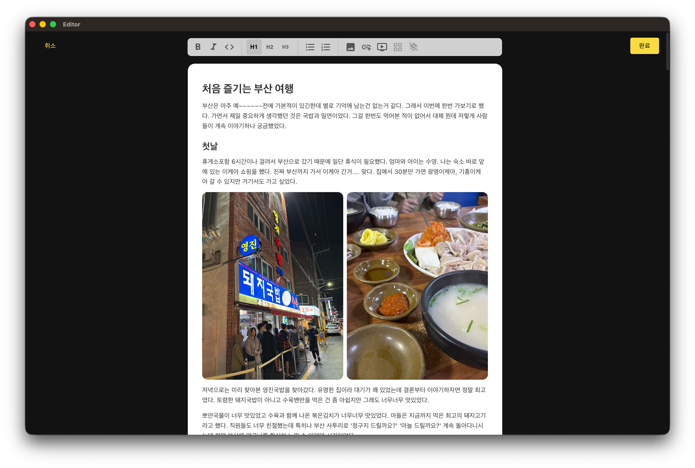

복잡한 기능과 방해 요소를 배제한 최적의 로컬 저작 환경을 만나보세요. 직관적이고 차분한 UI 구성으로 쾌적한 글쓰기 경험을 제공합니다.

방해받지 않는 레이아웃과 미니멀한 텍스트 캔버스를 제공합니다. 복잡한 설정 없이도 빠르게 글을 기록할 수 있는 깔끔한 타이핑 공간입니다.
장시간 타이핑에 최적화된 저자극 다크 테마가 기본 제공됩니다. 시각적 자극을 줄여 어두운 밤에도 몰입도 높은 집필 작업을 가능하게 합니다.
Electron 프레임워크의 강력하고 유연한 성능을 바탕으로 macOS, Windows, Linux 데스크탑 어디서나 완벽하게 일치하는 일관된 퍼포먼스를 제공합니다.
로컬에서 정성껏 작성한 소중한 글을 클릭 한 번으로 내 텀블러 블로그에 신속하게 업로드할 수 있습니다. 작성은 로컬에서 차분하게, 공유는 전 세계로 빠르게 처리해 보세요.
복잡한 웹 브라우저나 외부 연결에 신경 쓸 필요 없이, 오직 타이핑과 집필에만 전념할 수 있는 나만의 조용한 집필실을 만들어 드립니다.
다운로드